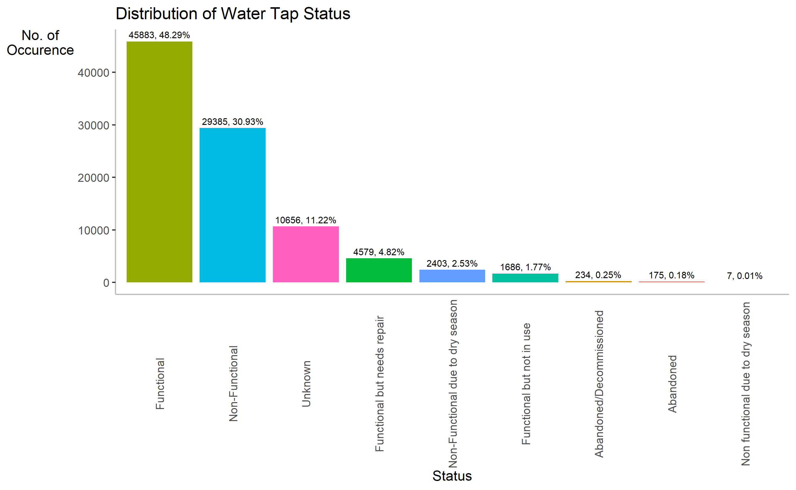
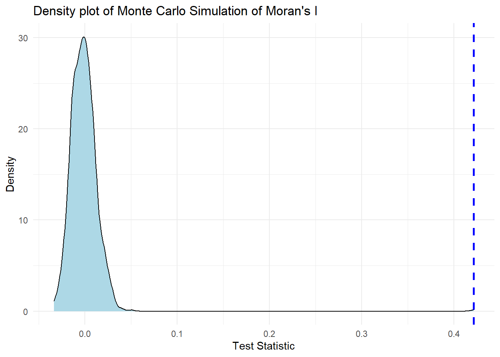
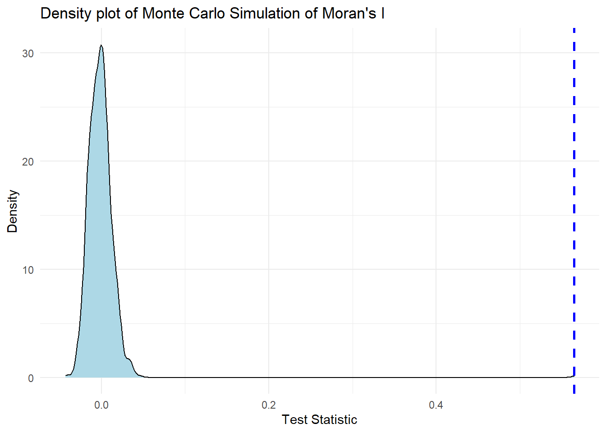
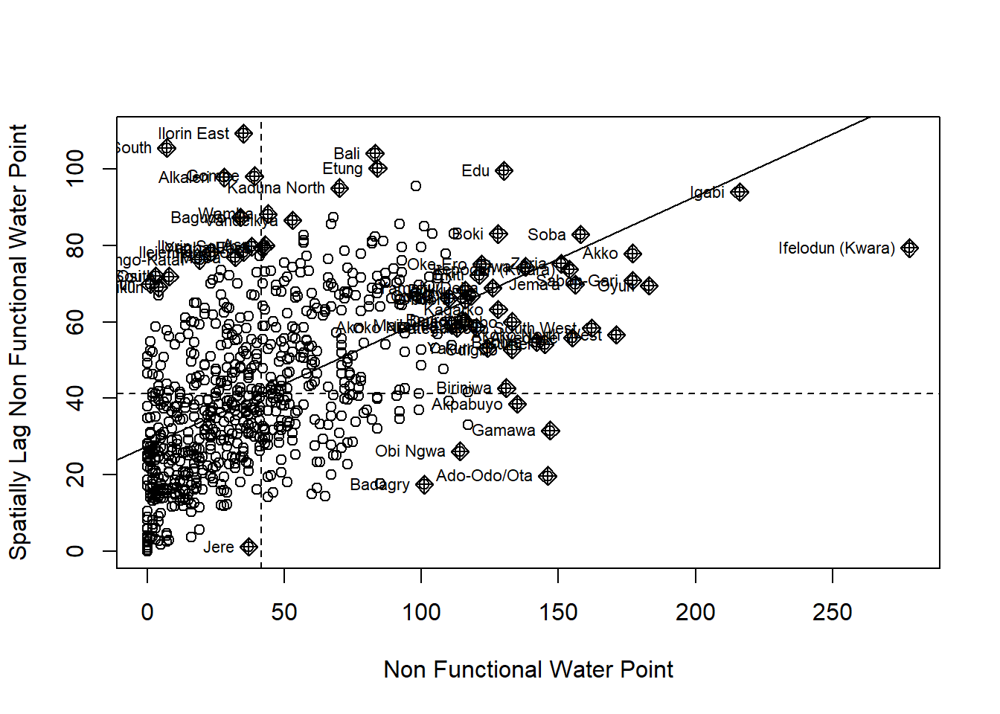
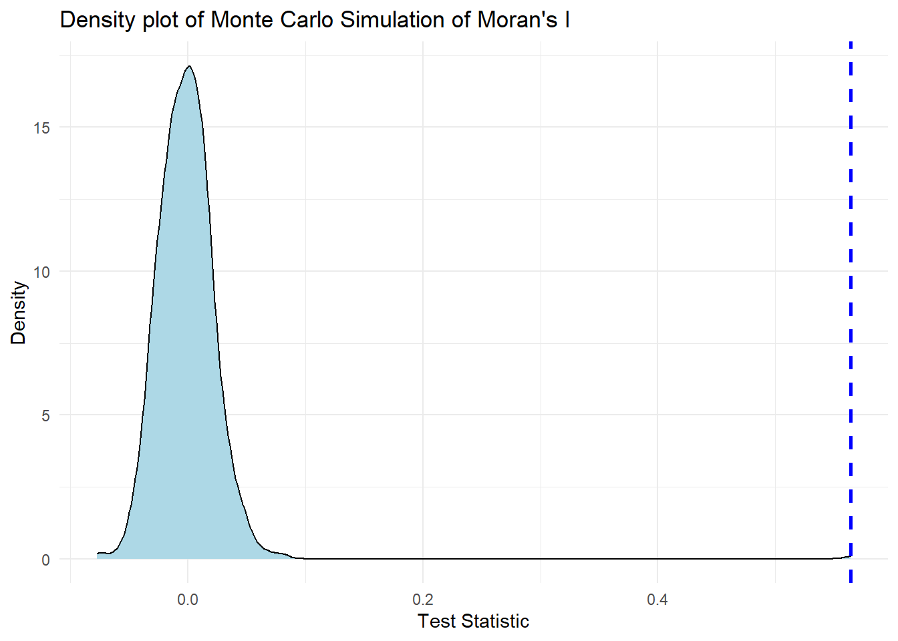
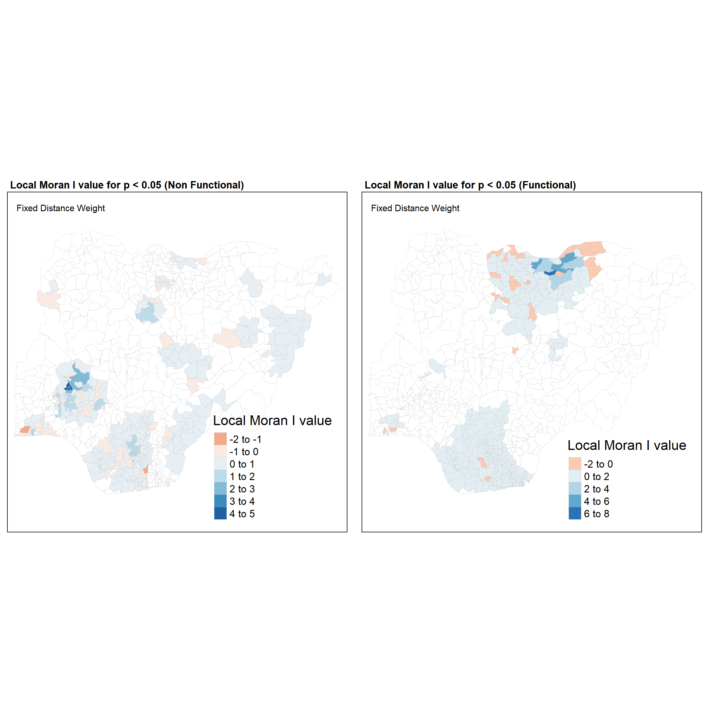
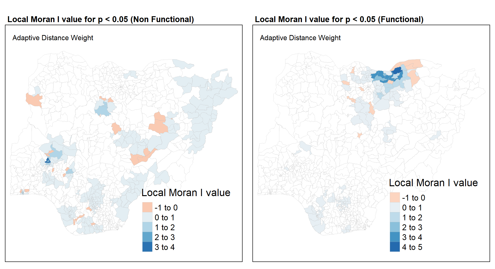
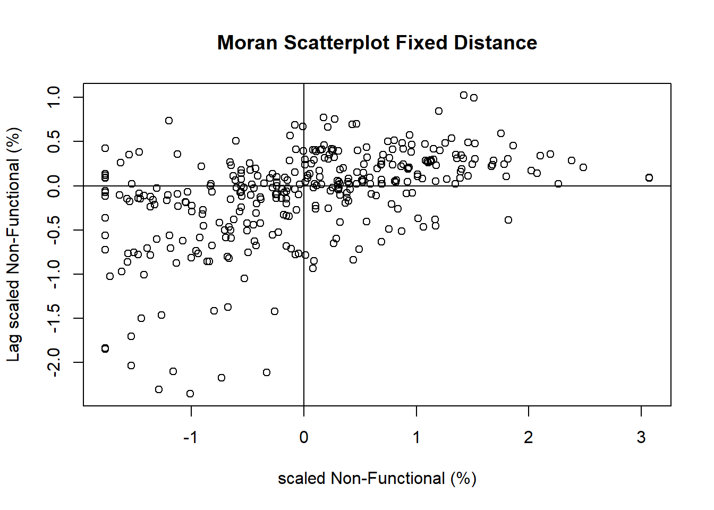
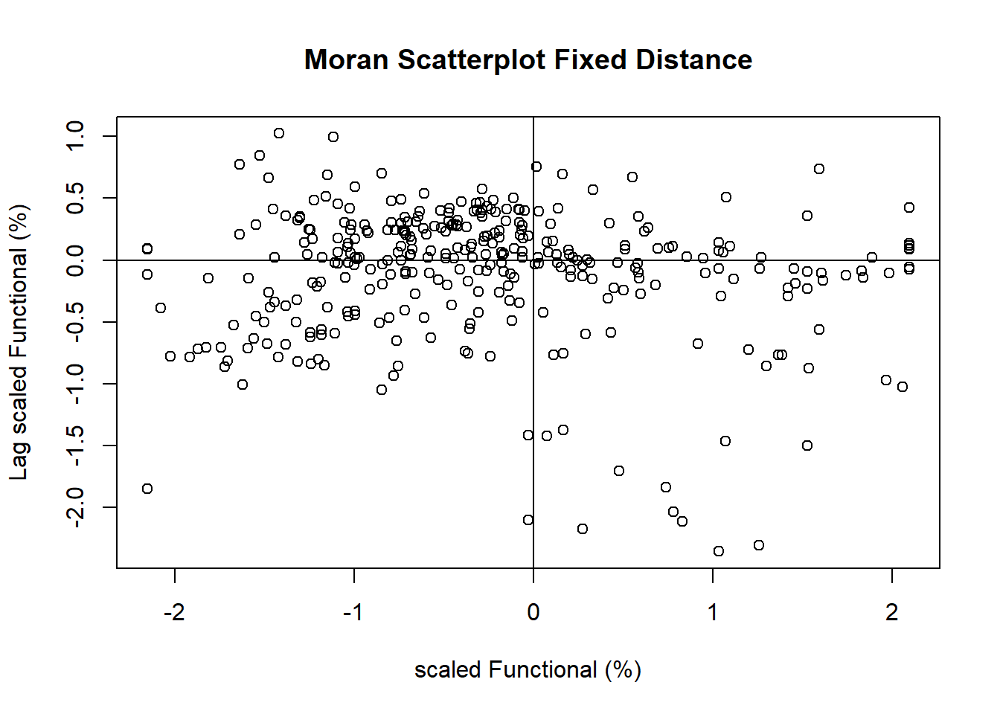
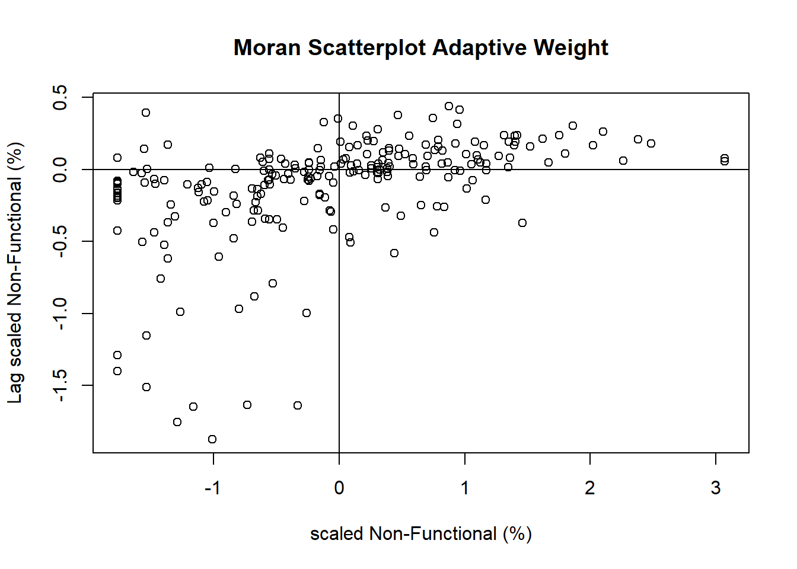

pacman::p_load(sf, spdep, tmap, tidyverse)Geospatial Analytics for Social Good - Understanding Nigeria Water functional and non-functional water point rate
Geospatial analytics hold tremendous potential to address complex problems facing society. In this study, you are tasked to apply appropriate global and local measures of spatial Association techniques to reveals the spatial patterns of Not Functional water points. For the purpose of this study, Nigeria will be used as the study country.
geospatial
sf
spdep
tmap
Overview
Introduction
The government of Nigeria deemed the Water, Sanitation, and Hygiene (WASH) sector to be in a state of emergency in 2018. In 2019, 60 million Nigerians were without access to basic drinking water due to a combination of bad infrastructure, a lack of necessary human resources, low investment, and a weak enabling regulatory environment, among other issues. 167 million people lacked access to even the most basic handwashing facilities, and 80 million lacked access to better sanitation facilities.
Only half of rural families have access to improved sanitation, and 39% of households in these areas conduct open defecation, a percentage that has barely changed since 1990.
Problem Statement
Geospatial analytics hold tremendous potential to address complex problems facing society. In this study, I will be applying appropriate global and local measures of spatial Association techniques to reveals the spatial patterns of Not Functional water points.
Introduction
Libraries
For this study, we will use the following packages from CRAN.
-
sf- Support for simple features, a standardized way to encode spatial vector data. Binds to ‘GDAL’ for reading and writing data, to ‘GEOS’ for geometrical operations, and to ‘PROJ’ for projection conversions and datum transformations. Uses by default the ‘s2’ package for spherical geometry operations on ellipsoidal (long/lat) coordinates. -
tidyverse- Loading the core tidyverse packages which will be used for data wrangling and visualisation. -
tmap- Thematic maps are geographical maps in which spatial data distributions are visualized. This package offers a flexible, layer-based, and easy to use approach to create thematic maps, such as choropleths and bubble maps. -
spdep- A collection of functions to create spatial weights matrix objects from polygon ‘contiguities’, from point patterns by distance and tessellations, for summarizing these objects, and for permitting their use in spatial data analysis, including regional aggregation by minimum spanning tree; a collection of tests for spatial ‘autocorrelation’
Data Preparation
Two dataset will be used for this study:
- Nigeria.shp: A shapefile of Nigeria from
Humanitarian Data Exchange Portalthat consist of all the Level-2 Administrative Boundary (also known as Local Government Area) - NigeriaAttribute.csv: A csv file containing multiple water point attributes of each Level-2 Administrative Nigeria Boundary from the
WPdx Global Data Repositories
Importing of data
We will use the st_read to import the shape file and read_csv to import the aspatial data into the R environment.
Reading layer `geoBoundaries-NGA-ADM2' from data source
`C:\jordanong09\ISSS624_Geospatial\posts\Geo\Geospatial_Exercise\data'
using driver `ESRI Shapefile'
Simple feature collection with 774 features and 5 fields
Geometry type: MULTIPOLYGON
Dimension: XY
Bounding box: xmin: 2.668534 ymin: 4.273007 xmax: 14.67882 ymax: 13.89442
Geodetic CRS: WGS 84nigeria <- st_read(dsn = "data",
layer = "geoBoundaries-NGA-ADM2")
nigeria_attribute <- read_csv("data/nigeriaattribute.csv")
nigeria <- nigeria %>%
st_transform(crs = 26391)Data Wrangling
The practice of correcting or deleting inaccurate, damaged, improperly formatted, duplicate, or incomplete data from a dataset is known as data wrangling. There are numerous ways for data to be duplicated or incorrectly categorized when merging multiple data sources. We willl now proceed to ensure our data is cleaned before conducting our analysis.
Checking of duplicated area name
Firstly, we will order our dataframe by alphabetical order based on the shapeName. We will then use the duplicated function to retrieve all the shapeName that has duplicates and store it in a list. From the result below, we identified 12 shapeNames that are duplicates.
nigeria <- (nigeria[order(nigeria$shapeName), ])
duplicate_area <- nigeria$shapeName[ nigeria$shapeName %in% nigeria$shapeName[duplicated(nigeria$shapeName)] ]
duplicate_area [1] "Bassa" "Bassa" "Ifelodun" "Ifelodun" "Irepodun" "Irepodun"
[7] "Nasarawa" "Nasarawa" "Obi" "Obi" "Surulere" "Surulere"Next, we will leverage on the interactive viewer of tmap to check the location of each area. Through the use of Google, we are able to retrieve the actual name and state of the areas. The table below shows the index and the actual name of the area.
| Index | Actual Area Name |
|---|---|
| 94 | Bassa (Kogi) |
| 95 | Bassa (Plateau) |
| 304 | Ifelodun (Kwara) |
| 305 | Ifelodun (Osun) |
| 355 | Irepodun (Kwara) |
| 356 | Irepodun (Osun) |
| 518 | Nassarawa |
| 546 | Obi (Benue) |
| 547 | Obi(Nasarawa) |
| 693 | Surulere (lagos) |
| 694 | Surulere (Oyo) |
tmap_mode("view")
tm_shape(nigeria[nigeria$shapeName %in% duplicate_area,]) +
tm_polygons()We will now access the individual index of the nigeria data frame and change the value. Lastly, we use the length() function to ensure there is no more duplicated shapeName.
nigeria$shapeName[c(94,95,304,305,355,356,519,546,547,693,694)] <- c("Bassa (Kogi)","Bassa (Plateau)",
"Ifelodun (Kwara)","Ifelodun (Osun)",
"Irepodun (Kwara)","Irepodun (Osun)",
"Nassarawa","Obi (Benue)","Obi(Nasarawa)",
"Surulere (Lagos)","Surulere (Oyo)")
length((nigeria$shapeName[ nigeria$shapeName %in% nigeria$shapeName[duplicated(nigeria$shapeName)] ]))[1] 0Projection of sf dataframe
Since our aspatial data was imported to a tibble dataframe, we will need to convert it to an sf object. First, we rename the columns for ease of representation using the rename() function from dyplr. We then only retain the columns required for analysis such as the name of the area name, latitude, longitude and status. We realised there were NA values within the status column, we will replace the NA values with Unknown using the mutate() function.
We will then use the st_as_sf() function to convert the dataframe to an sf object. We will have to input the column that specify the longitude and latitude, and lastly, the CRS projection of the coordinates.
nigeriaT <- nigeria_attribute %>%
rename ("Country" = "#clean_country_name",
"clean_adm2" = "#clean_adm2",
"status" = "#status_clean",
"lat" = "#lat_deg",
"long" = "#lon_deg") %>%
select (clean_adm2,status,lat,long) %>%
mutate(status = replace_na(status, "Unknown"))
nigeriaT_sf <- st_as_sf(nigeriaT, coords = c("long", "lat"), crs = 4326)We will now transform the coordinates from 4326 to 26391 projection using the st_transform() function.
nigeriaT_sf <- st_transform(nigeriaT_sf, crs = 26391)
st_crs (nigeria)
st_crs (nigeriaT_sf)Visualising of distribution using ggplot
We will use the ggplot function to visualise the distribution of the different status. To sort the distribution by descending order fct_infreq will be use.
ggplot(data= nigeriaT_sf,
aes(x= fct_infreq(status))) +
geom_bar(aes(fill = status), show.legend = FALSE) +
geom_text(stat = 'count',
aes(label= paste0(stat(count), ', ',
round(stat(count)/sum(stat(count))*100,
2), '%')), vjust= -0.5, size= 2.5) +
labs(y= 'No. of\nOccurence', x= 'Status',
title = "Distribution of Water Tap Status") +
theme(axis.title.y= element_text(angle=0), axis.ticks.x= element_blank(),
panel.background= element_blank(), axis.line= element_line(color= 'grey'),
axis.text.x = element_text(angle = 90, vjust = 0.5))
Extracting Status of Water Point
Since this analysis is on the functionality of the water taps, we have to extract the number of functional and non-functional water taps from the nigeriaT_sf dataframe. The status column reveal the status of the water tap. We will now see what values are recorded by using the unique() function. From the result below, we can identify mainly four categories of statuses; Functional, Non-Functional, Abandoned, Unknown.
Note: For this analysis, abandoned water taps will be analysed under non-functional.
From the result below, we can identify a pattern to classify the status based on our criteria. By extracting the first word of the sentence before the punctuation, we will be able to extract the word; Unknown, Abandoned, Functional and Non. This will assist us in grouping these status.
unique(nigeriaT_sf$status)[1] "Unknown" "Abandoned/Decommissioned"
[3] "Non-Functional" "Functional"
[5] "Functional but needs repair" "Functional but not in use"
[7] "Abandoned" "Non functional due to dry season"
[9] "Non-Functional due to dry season"To replace the original values, we will use the gsub() function. A regular expression **“([A-Za-z]+).*” is used to extract all letters and \1** is used to back reference the first capturing group. The result below shows the unique values left within the column.
Computing Ratio of Functional and Non Functional Water Point
Instead of creating another data frame to store the new values, we will leverage on the filter function by using the single square bracket “[]” operator. The coordinates beings with a row position and that will be used for our filtering condition. R Dataframe. Since our water taps are point data, we will use st_intersects() to retrieve every geometry point that intersect with the polygon of the Nigeria ADM area, and subsequently use the function lengths() to retrieve the number of points that intersects with the polygon.
nigeria$functional <- lengths(st_intersects(nigeria, nigeriaT_sf[nigeriaT_sf$status == "Functional",]))
nigeria$nonfunctional <- lengths(st_intersects(nigeria, nigeriaT_sf[nigeriaT_sf$status == "Non",])) + lengths(st_intersects(nigeria, nigeriaT_sf[nigeriaT_sf$status == "Abandoned",]))
nigeria$unknown <- lengths(st_intersects(nigeria, nigeriaT_sf[nigeriaT_sf$status == "Unknown",]))
nigeria$total <- lengths(st_intersects(nigeria, nigeriaT_sf))Next, for areas without any water taps, my assumption is that these areas do not need water taps for many possible reasons (lack of habitat, urbanised areas, etc), and therefore will be excluded from the analysis. I use the filter() function to remove areas without any water taps and mutate() function to create two new columns that shows the percentage of functional and non-functional water points over the total water point in the area. (Including unknown water point status)
nigeria <- nigeria %>%
filter (total != 0) %>%
mutate (pct_functional = case_when(
functional == 0 ~ 0,
TRUE ~ (functional/total) * 100
)) %>%
mutate (pct_nonfunctional = case_when(
nonfunctional == 0 ~ 0,
TRUE ~ (nonfunctional/total) * 100
))Mapping of Functional and Non Functional Water Point
Jenks Choropleth Map
We will now plot the choropleth map using tmap and jenks classification.
tmap_mode ("plot")
fun <- tm_shape (nigeria) +
tm_fill("pct_functional",
style = "jenks",
n=6,
title = "Functional (%)") +
tm_layout(main.title = "Distribution of Functional Water Tap (%) by ADM2",
main.title.position = "center",
main.title.size = 0.7,
main.title.fontface = "bold",
legend.height = 0.45,
legend.width = 0.35,
frame = TRUE) +
tm_borders(alpha = 0.5)
nfun <- tm_shape (nigeria) +
tm_fill("pct_nonfunctional",
style = "jenks",
n=6,
title = "Non-Functional (%)") +
tm_layout(main.title = "Distribution of Non Functional Water Tap (%) by ADM2",
main.title.position = "center",
main.title.size = 0.7,
main.title.fontface = "bold",
legend.height = 0.45,
legend.width = 0.35,
frame = TRUE) +
tm_borders(alpha = 0.5)
tmap_arrange (fun, nfun, ncol = 2, asp = 1)
Observations from Jenks Choropleth Map
By looking at the two chloropleth map, we can make 2 inference: - The northen region have relatively higher percentage of functional water point compared to the southern region. - The southern region also have relatively higher percentage of non-functional water point.
Now, answering the business question, should we focus our resources in repairing the water tap located at the southern region? Are there any more regions that require our attention? We will now proceed to conduct geospatial analysis to justify or rebut the claims made based on the choropleth map.
LISA Cluster Map
Introduction
The Spatial Autocorrelation measures spatial autocorrelation based on feature locations and feature values simultaneously. Given a set of features and an associated attribute, it evaluates whether the expressed pattern is clustered, scattered, or random. The tool calculates the Moran’s I index value as well as a z-score and p-value to assess the significance of this index. P-values are numerical approximations of the area under the curve for a known distribution, bounded by the test statistic.
In this study we will explore the computation of Global and Local Measure of Spatial Autocorrelation (GLSA) by using spdep package.
For this study, we will be using the distance based weight matrix. There are two type of distance-based proximity matrix, they are:
- Fixed Distance Weight Matrix
- Adaptive Distance Weight Matrix
Since the study is regarding the prioritisation of water tap repair and to identify areas which have restriction in water supply access, neighbouring regions that are nearer to the selected region should have greater weights compared to neighbouring regions that are further away. Therefore, with this concept in mind, we will employ the Inverse distance weighting to take distance decay into consideration.
Deriving distance-based and adaptive weight matrix
The first step is to retrieve the centroid for each area. To retrieve the centroid of each area, we will use the st_centroid() function. The st_centroid() function will calculates the geometric center of a spatial object.
coords <- st_centroid(st_geometry(nigeria))
coords[1]Geometry set for 1 feature
Geometry type: POINT
Dimension: XY
Bounding box: xmin: 549364 ymin: 123694.9 xmax: 549364 ymax: 123694.9
Projected CRS: Minna / Nigeria West BeltDetermine the cut-off distance for fixed distance weight matrix
Secondly, we need to determine the upper limit for distance band by using the steps below:
Return a matrix with the indices of points belonging to the set of the k nearest neighbours of each other by using knearneigh() of spdep.
Convert the knn object returned by knearneigh() into a neighbours list of class nb with a list of integer vectors containing neighbour region number ids by using knn2nb().
Return the length of neighbour relationship edges by using nbdists() of spdep. The function returns in the units of the coordinates if the coordinates are projected, in km otherwise.
Remove the list structure of the returned object by using unlist().
Min. 1st Qu. Median Mean 3rd Qu. Max.
2669 12808 20008 21804 27013 72139 The summary report shows that the largest first nearest neighbour distance is 72.139 km, so using this as the upper threshold gives certainty that all units will have at least one neighbour. We then save the max value as the threshold for the subsequent function.
Computing Fixed distance weight matrix
Now, we will compute the distance weight matrix by using dnearneigh() as shown in the code chunk below. The function identifies neighbours of region points by Euclidean distance in the metric of the points between lower (greater than or equal to and upper (less than or equal to) bounds.
wm_d73 <- dnearneigh(coords, 0, threshold)
wm_d73Neighbour list object:
Number of regions: 761
Number of nonzero links: 18022
Percentage nonzero weights: 3.111958
Average number of links: 23.682 From the result above, we can identify an average of 23 neighbours per region using the distance based weight matrix.
Computing Inverse Adaptive distance weight matrix
Next, we will compute the inverse adaptive distance weight matrix. The knearneigh() function uses spartial indexing to identify the nearest neighbour. For this analysis, we will set to number of neighbours to 8.
k8 <- knn2nb(knearneigh(coords, k = 8))
k8Neighbour list object:
Number of regions: 761
Number of nonzero links: 6088
Percentage nonzero weights: 1.051248
Average number of links: 8
Non-symmetric neighbours listComputing Inverse Distance Weights
To compute the inverse distance, we need a function that applies \(\frac{1}{x}\) to the entire distance data structure. We use lapply to achieve this. The required parameters are the distance and the function specified by lapply. Use the functional operator and \(\frac{1}{x}\) to get the corresponding function. The important thing to note is that the distance units in the dataset are meters. This means that the distance values between points can be very large, resulting in small reciprocals. To fix this scale dependency, rescale the distances by doing a \(\frac{x}{1000}\)in the function before computing the reciprocal.
Computing Inverse Distance Weights for Fixed Distance
distances <- nbdists(wm_d73,coords)
distances[1][[1]]
[1] 4004.008 45439.251 37710.356 51041.840 67445.464 65694.575 70278.881
[8] 66402.395 70754.787 63293.565 44070.130 67132.783 30584.808 31191.772
[15] 31060.775 61914.751 40430.849 50524.637 68364.757 57815.248 58326.473
[22] 21477.914 55573.697 46904.765 62426.753 37887.549 52063.146 40086.745
[29] 52077.350 19783.847 31237.020 65772.348 68438.043 48339.227 66025.875
[36] 63788.895 32358.664 62335.064 71500.748 11065.063 48564.675 29667.531
[43] 49875.572 55850.546 70099.782 57661.903 16123.664 69453.919 46496.314
[50] 9313.577 56305.742 48780.437 56595.108 31208.261 53734.648 40998.087
[57] 10676.236 35065.479 20859.370 23059.238 53898.687 43026.271 61625.223distances <- lapply(distances, function(x) (1/(x/1000)))
distances[1][[1]]
[1] 0.24974975 0.02200741 0.02651791 0.01959177 0.01482679 0.01522196
[7] 0.01422903 0.01505970 0.01413332 0.01579939 0.02269111 0.01489585
[13] 0.03269597 0.03205974 0.03219495 0.01615124 0.02473359 0.01979232
[19] 0.01462742 0.01729648 0.01714487 0.04655946 0.01799412 0.02131980
[25] 0.01601877 0.02639390 0.01920744 0.02494590 0.01920221 0.05054629
[31] 0.03201330 0.01520396 0.01461176 0.02068713 0.01514558 0.01567671
[37] 0.03090362 0.01604234 0.01398587 0.09037454 0.02059110 0.03370688
[43] 0.02004990 0.01790493 0.01426538 0.01734247 0.06202064 0.01439804
[49] 0.02150708 0.10737014 0.01776018 0.02050002 0.01766937 0.03204280
[55] 0.01860997 0.02439138 0.09366597 0.02851808 0.04794009 0.04336657
[61] 0.01855333 0.02324161 0.01622712Computing Inverse Distance Weights for Adaptive Distance
k.distances <- nbdists(k8, coords)
k.distances[1][[1]]
[1] 4004.008 21477.914 19783.847 11065.063 16123.664 9313.577 10676.236
[8] 20859.370invdistance <- lapply(k.distances, function(x) (1/(x/1000)))
invdistance[1][[1]]
[1] 0.24974975 0.04655946 0.05054629 0.09037454 0.06202064 0.10737014 0.09366597
[8] 0.04794009Visualising Weight Matrices
Using the base R plot function, we will now plot to visualise the areas with their respective neighbours after assignment based on the various methods. The left graph with the red lines show the adaptive distance with 8 neighbours and the right graph with the black lines show the links of neighbours within the cut-off distance of the above threshold.
Constructing Distance Binary Weight Matrix
Now we will have to construct the distance weight matrix using the neighbours and inverse distance that were computed above. Since we have the inverse distance as a variable, we will use the Binary Weight Matrix and input the inverse distance as the weight. The nb2listw() function takes in a list input glist to identify the weight for each neighbour.
The code chunk below will construct the fixed distance weight matrix and subsequently implement the binary weight matrix using the nb2listw() function.
rswm_dw <- nb2listw(wm_d73,
glist = distances,
style="B",
zero.policy = TRUE)
summary (rswm_dw)Characteristics of weights list object:
Neighbour list object:
Number of regions: 761
Number of nonzero links: 18022
Percentage nonzero weights: 3.111958
Average number of links: 23.682
Link number distribution:
1 2 3 4 5 6 7 8 9 10 11 12 13 14 15 16 17 18 19 20 21 22 23 24 25 26
6 11 10 17 30 31 31 33 29 36 26 18 21 23 16 12 11 11 17 16 16 10 14 10 9 9
27 28 29 30 31 32 33 34 35 36 37 38 39 40 41 42 43 44 45 46 47 48 49 50 51 52
12 6 15 13 11 9 8 8 12 6 12 17 14 9 9 4 5 3 8 5 11 8 5 5 4 2
53 54 55 56 57 58 59 60 61 62 63 64 65 67 68 70
3 3 6 3 5 6 2 5 5 8 6 6 4 3 1 1
6 least connected regions:
88 110 121 235 657 753 with 1 link
1 most connected region:
572 with 70 links
Weights style: B
Weights constants summary:
n nn S0 S1 S2
B 761 579121 486.0122 43.00868 2155.714The code chunk below will construct the adaptive distance weight matrix and subsequently implement the Binary weight matrix using the nb2listw() function.
bwm_apd <- nb2listw(k8,
glist = invdistance,
style = "B",
zero.policy = TRUE)
summary (bwm_apd)Characteristics of weights list object:
Neighbour list object:
Number of regions: 761
Number of nonzero links: 6088
Percentage nonzero weights: 1.051248
Average number of links: 8
Non-symmetric neighbours list
Link number distribution:
8
761
761 least connected regions:
1 2 3 4 5 6 7 8 9 10 11 12 13 14 15 16 17 18 19 20 21 22 23 24 25 26 27 28 29 30 31 32 33 34 35 36 37 38 39 40 41 42 43 44 45 46 47 48 49 50 51 52 53 54 55 56 57 58 59 60 61 62 63 64 65 66 67 68 69 70 71 72 73 74 75 76 77 78 79 80 81 82 83 84 85 86 87 88 89 90 91 92 93 94 95 96 97 98 99 100 101 102 103 104 105 106 107 108 109 110 111 112 113 114 115 116 117 118 119 120 121 122 123 124 125 126 127 128 129 130 131 132 133 134 135 136 137 138 139 140 141 142 143 144 145 146 147 148 149 150 151 152 153 154 155 156 157 158 159 160 161 162 163 164 165 166 167 168 169 170 171 172 173 174 175 176 177 178 179 180 181 182 183 184 185 186 187 188 189 190 191 192 193 194 195 196 197 198 199 200 201 202 203 204 205 206 207 208 209 210 211 212 213 214 215 216 217 218 219 220 221 222 223 224 225 226 227 228 229 230 231 232 233 234 235 236 237 238 239 240 241 242 243 244 245 246 247 248 249 250 251 252 253 254 255 256 257 258 259 260 261 262 263 264 265 266 267 268 269 270 271 272 273 274 275 276 277 278 279 280 281 282 283 284 285 286 287 288 289 290 291 292 293 294 295 296 297 298 299 300 301 302 303 304 305 306 307 308 309 310 311 312 313 314 315 316 317 318 319 320 321 322 323 324 325 326 327 328 329 330 331 332 333 334 335 336 337 338 339 340 341 342 343 344 345 346 347 348 349 350 351 352 353 354 355 356 357 358 359 360 361 362 363 364 365 366 367 368 369 370 371 372 373 374 375 376 377 378 379 380 381 382 383 384 385 386 387 388 389 390 391 392 393 394 395 396 397 398 399 400 401 402 403 404 405 406 407 408 409 410 411 412 413 414 415 416 417 418 419 420 421 422 423 424 425 426 427 428 429 430 431 432 433 434 435 436 437 438 439 440 441 442 443 444 445 446 447 448 449 450 451 452 453 454 455 456 457 458 459 460 461 462 463 464 465 466 467 468 469 470 471 472 473 474 475 476 477 478 479 480 481 482 483 484 485 486 487 488 489 490 491 492 493 494 495 496 497 498 499 500 501 502 503 504 505 506 507 508 509 510 511 512 513 514 515 516 517 518 519 520 521 522 523 524 525 526 527 528 529 530 531 532 533 534 535 536 537 538 539 540 541 542 543 544 545 546 547 548 549 550 551 552 553 554 555 556 557 558 559 560 561 562 563 564 565 566 567 568 569 570 571 572 573 574 575 576 577 578 579 580 581 582 583 584 585 586 587 588 589 590 591 592 593 594 595 596 597 598 599 600 601 602 603 604 605 606 607 608 609 610 611 612 613 614 615 616 617 618 619 620 621 622 623 624 625 626 627 628 629 630 631 632 633 634 635 636 637 638 639 640 641 642 643 644 645 646 647 648 649 650 651 652 653 654 655 656 657 658 659 660 661 662 663 664 665 666 667 668 669 670 671 672 673 674 675 676 677 678 679 680 681 682 683 684 685 686 687 688 689 690 691 692 693 694 695 696 697 698 699 700 701 702 703 704 705 706 707 708 709 710 711 712 713 714 715 716 717 718 719 720 721 722 723 724 725 726 727 728 729 730 731 732 733 734 735 736 737 738 739 740 741 742 743 744 745 746 747 748 749 750 751 752 753 754 755 756 757 758 759 760 761 with 8 links
761 most connected regions:
1 2 3 4 5 6 7 8 9 10 11 12 13 14 15 16 17 18 19 20 21 22 23 24 25 26 27 28 29 30 31 32 33 34 35 36 37 38 39 40 41 42 43 44 45 46 47 48 49 50 51 52 53 54 55 56 57 58 59 60 61 62 63 64 65 66 67 68 69 70 71 72 73 74 75 76 77 78 79 80 81 82 83 84 85 86 87 88 89 90 91 92 93 94 95 96 97 98 99 100 101 102 103 104 105 106 107 108 109 110 111 112 113 114 115 116 117 118 119 120 121 122 123 124 125 126 127 128 129 130 131 132 133 134 135 136 137 138 139 140 141 142 143 144 145 146 147 148 149 150 151 152 153 154 155 156 157 158 159 160 161 162 163 164 165 166 167 168 169 170 171 172 173 174 175 176 177 178 179 180 181 182 183 184 185 186 187 188 189 190 191 192 193 194 195 196 197 198 199 200 201 202 203 204 205 206 207 208 209 210 211 212 213 214 215 216 217 218 219 220 221 222 223 224 225 226 227 228 229 230 231 232 233 234 235 236 237 238 239 240 241 242 243 244 245 246 247 248 249 250 251 252 253 254 255 256 257 258 259 260 261 262 263 264 265 266 267 268 269 270 271 272 273 274 275 276 277 278 279 280 281 282 283 284 285 286 287 288 289 290 291 292 293 294 295 296 297 298 299 300 301 302 303 304 305 306 307 308 309 310 311 312 313 314 315 316 317 318 319 320 321 322 323 324 325 326 327 328 329 330 331 332 333 334 335 336 337 338 339 340 341 342 343 344 345 346 347 348 349 350 351 352 353 354 355 356 357 358 359 360 361 362 363 364 365 366 367 368 369 370 371 372 373 374 375 376 377 378 379 380 381 382 383 384 385 386 387 388 389 390 391 392 393 394 395 396 397 398 399 400 401 402 403 404 405 406 407 408 409 410 411 412 413 414 415 416 417 418 419 420 421 422 423 424 425 426 427 428 429 430 431 432 433 434 435 436 437 438 439 440 441 442 443 444 445 446 447 448 449 450 451 452 453 454 455 456 457 458 459 460 461 462 463 464 465 466 467 468 469 470 471 472 473 474 475 476 477 478 479 480 481 482 483 484 485 486 487 488 489 490 491 492 493 494 495 496 497 498 499 500 501 502 503 504 505 506 507 508 509 510 511 512 513 514 515 516 517 518 519 520 521 522 523 524 525 526 527 528 529 530 531 532 533 534 535 536 537 538 539 540 541 542 543 544 545 546 547 548 549 550 551 552 553 554 555 556 557 558 559 560 561 562 563 564 565 566 567 568 569 570 571 572 573 574 575 576 577 578 579 580 581 582 583 584 585 586 587 588 589 590 591 592 593 594 595 596 597 598 599 600 601 602 603 604 605 606 607 608 609 610 611 612 613 614 615 616 617 618 619 620 621 622 623 624 625 626 627 628 629 630 631 632 633 634 635 636 637 638 639 640 641 642 643 644 645 646 647 648 649 650 651 652 653 654 655 656 657 658 659 660 661 662 663 664 665 666 667 668 669 670 671 672 673 674 675 676 677 678 679 680 681 682 683 684 685 686 687 688 689 690 691 692 693 694 695 696 697 698 699 700 701 702 703 704 705 706 707 708 709 710 711 712 713 714 715 716 717 718 719 720 721 722 723 724 725 726 727 728 729 730 731 732 733 734 735 736 737 738 739 740 741 742 743 744 745 746 747 748 749 750 751 752 753 754 755 756 757 758 759 760 761 with 8 links
Weights style: B
Weights constants summary:
n nn S0 S1 S2
B 761 579121 237.6033 30.43191 453.5401Global Spatial Autocorrelation: Moran’s I
To identify whether the area analysed is clustered, dispersed or random, we will have to perform the spatial autocorrelation Moran’s I test.
Computing Global Moran’s I
We will now perform Moran’s I statistics testing by using the moran.test() from spdep on both functional and non functional water point percentage. The global Moran’s I test will also be performed on both the fixed distance and adaptive distance weight matrices.
moran.test(nigeria$pct_nonfunctional,
listw=rswm_dw,
zero.policy = TRUE,
na.action=na.omit)
Moran I test under randomisation
data: nigeria$pct_nonfunctional
weights: rswm_dw
Moran I statistic standard deviate = 32.052, p-value < 2.2e-16
alternative hypothesis: greater
sample estimates:
Moran I statistic Expectation Variance
0.4210179196 -0.0013157895 0.0001736248 moran.test(nigeria$pct_functional,
listw=rswm_dw,
zero.policy = TRUE,
na.action=na.omit)
Moran I test under randomisation
data: nigeria$pct_functional
weights: rswm_dw
Moran I statistic standard deviate = 42.929, p-value < 2.2e-16
alternative hypothesis: greater
sample estimates:
Moran I statistic Expectation Variance
0.5644376118 -0.0013157895 0.0001736823 moran.test(nigeria$pct_nonfunctional,
listw=bwm_apd,
zero.policy = TRUE,
na.action=na.omit)
Moran I test under randomisation
data: nigeria$pct_nonfunctional
weights: bwm_apd
Moran I statistic standard deviate = 22.233, p-value < 2.2e-16
alternative hypothesis: greater
sample estimates:
Moran I statistic Expectation Variance
0.5115959890 -0.0013157895 0.0005322145 moran.test(nigeria$pct_functional,
listw=bwm_apd,
zero.policy = TRUE,
na.action=na.omit)
Moran I test under randomisation
data: nigeria$pct_functional
weights: bwm_apd
Moran I statistic standard deviate = 24.492, p-value < 2.2e-16
alternative hypothesis: greater
sample estimates:
Moran I statistic Expectation Variance
0.5638015977 -0.0013157895 0.0005323946 Interpretation of results
Based on all the results above, the p value is below the alpha value of 0.05, therefore we have enough statistical evidence to reject the null hypothesis that the attribute is randomly distributed and a positive Moran I value indicate more spatially clustered than would be expected if underlying spatial processes were random.
Computing Monte Carlo Moran’s I
The code chunk below performs permutation test for Moran’s I statistic by using moran.mc() of spdep. A total of 1000 simulation will be performed.
set.seed(1234)
fd_MC = moran.mc(nigeria$pct_nonfunctional,
listw=rswm_dw,
nsim=999,
zero.policy = TRUE,
na.action=na.omit)
fd_MC
Monte-Carlo simulation of Moran I
data: nigeria$pct_nonfunctional
weights: rswm_dw
number of simulations + 1: 1000
statistic = 0.42102, observed rank = 1000, p-value = 0.001
alternative hypothesis: greaterset.seed(1234)
fd_MC_fun = moran.mc(nigeria$pct_functional,
listw=rswm_dw,
nsim=999,
zero.policy = TRUE,
na.action=na.omit)
fd_MC_fun
Monte-Carlo simulation of Moran I
data: nigeria$pct_functional
weights: rswm_dw
number of simulations + 1: 1000
statistic = 0.56444, observed rank = 1000, p-value = 0.001
alternative hypothesis: greaterset.seed(1234)
adp_MC= moran.mc(nigeria$pct_nonfunctional,
listw=bwm_apd,
nsim=999,
zero.policy = TRUE,
na.action=na.omit)
adp_MC
Monte-Carlo simulation of Moran I
data: nigeria$pct_nonfunctional
weights: bwm_apd
number of simulations + 1: 1000
statistic = 0.5116, observed rank = 1000, p-value = 0.001
alternative hypothesis: greaterset.seed(1234)
adp_MC_fun = moran.mc(nigeria$pct_functional,
listw=bwm_apd,
nsim=999,
zero.policy = TRUE,
na.action=na.omit)
adp_MC_fun
Monte-Carlo simulation of Moran I
data: nigeria$pct_functional
weights: bwm_apd
number of simulations + 1: 1000
statistic = 0.5638, observed rank = 1000, p-value = 0.001
alternative hypothesis: greaterVisualising Monte Carlo Moran’s I
We will use a density plot to visualise the output of the Monte Carlo Moran’s I. First, we need to extract the res value and convert it into a dataframe. We then visualise the test statistic result using geom_density() from the ggplot package. geom_vline is use to represent the actual Moran I value.
fd_monte_carlo <- as.data.frame(fd_MC[7])
ggplot(fd_monte_carlo, aes(x=res)) +
geom_density(fill="lightblue") +
geom_vline(aes(xintercept=0.42102),
color="blue", linetype="dashed", size=1) +
labs(title = "Density plot of Monte Carlo Simulation of Moran's I", x = "Test Statistic", y = "Density") +
theme_minimal()
fd_monte_carlo_fun <- as.data.frame(fd_MC_fun[7])
ggplot(fd_monte_carlo_fun, aes(x=res)) +
geom_density(fill="lightblue") +
geom_vline(aes(xintercept=0.56444),
color="blue", linetype="dashed", size=1) +
labs(title = "Density plot of Monte Carlo Simulation of Moran's I", x = "Test Statistic", y = "Density") +
theme_minimal() 
adp_monte_carlo <- as.data.frame(adp_MC[7])
ggplot(adp_monte_carlo, aes(x=res)) +
geom_density(fill="lightblue") +
geom_vline(aes(xintercept=0.5116),
color="blue", linetype="dashed", size=1) +
labs(title = "Density plot of Monte Carlo Simulation of Moran's I", x = "Test Statistic", y = "Density") +
theme_minimal() 
adp_monte_carlo_fun <- as.data.frame(adp_MC_fun[7])
ggplot(adp_monte_carlo_fun, aes(x=res)) +
geom_density(fill="lightblue") +
geom_vline(aes(xintercept=0.5638),
color="blue", linetype="dashed", size=1) +
labs(title = "Density plot of Monte Carlo Simulation of Moran's I", x = "Test Statistic", y = "Density") +
theme_minimal() 
Cluster and Outlier Analysis
Computing local Moran’s I
To compute local Moran’s I, the localmoran() function of spdep will be used. It computes Ii values, given a set of zi values and a listw object providing neighbour weighting information for the polygon associated with the zi values.
fips <- order(nigeria$shapeName)
localMI_dw <- localmoran(nigeria$nonfunctional, rswm_dw)
localMI_dw_fun <- localmoran(nigeria$functional, rswm_dw)
localMI_adp <- localmoran(nigeria$nonfunctional, bwm_apd)
localMI_adp_fun <- localmoran(nigeria$functional, bwm_apd)
head(localMI_dw,3) Ii E.Ii Var.Ii Z.Ii Pr(z != E(Ii))
1 0.45028841 -2.015620e-03 0.0998886136 1.4311082 0.15239922
2 0.13674255 -9.714502e-05 0.0050358216 1.9283104 0.05381653
3 -0.00773083 -1.704297e-05 0.0004332892 -0.3705772 0.71095246head(localMI_dw_fun,3) Ii E.Ii Var.Ii Z.Ii Pr(z != E(Ii))
1 0.848290175 -0.0014284243 0.070810822 3.19319400 0.0014070838
2 0.577851238 -0.0005902825 0.030591200 3.30720567 0.0009423168
3 -0.002253816 -0.0001063072 0.002701745 -0.04131549 0.9670443851head(localMI_adp,3) Ii E.Ii Var.Ii Z.Ii Pr(z != E(Ii))
1 -0.02804274 -7.980020e-04 0.0819743028 -0.09515767 0.9241896
2 0.02276868 -3.975715e-05 0.0041969420 0.35206997 0.7247858
3 -0.01086825 -1.515025e-05 0.0004136275 -0.53364083 0.5935901head(localMI_adp_fun,3) Ii E.Ii Var.Ii Z.Ii Pr(z != E(Ii))
1 0.333118954 -5.655260e-04 0.058111406 1.38422062 0.1662909
2 0.252550827 -2.415764e-04 0.025495242 1.58319514 0.1133770
3 -0.005107121 -9.450119e-05 0.002579146 -0.09870221 0.9213747Mapping the local Moran’s I
We have to combine the local Moran’s dataframe with the our exisiting Nigeria spatialdataframe before plotting. We will use the cbind() function.
nigeria_localMI_dw <- cbind(nigeria,localMI_dw) %>%
rename(Pr.Ii = Pr.z....E.Ii..)
nigeria_localMI_dw <- cbind(nigeria_localMI_dw,localMI_dw_fun) %>%
rename(Pr.Ii.fun = Pr.z....E.Ii..)
nigeria_localMI_adp <- cbind(nigeria,localMI_adp) %>%
rename(Pr.Ii = Pr.z....E.Ii..)
nigeria_localMI_adp <- cbind(nigeria_localMI_adp,localMI_adp_fun) %>%
rename(Pr.Ii.fun = Pr.z....E.Ii..)Mapping local Moran’s I values
To better understand which area are outliers/clusters, we will visualise the Moran I values of each area using tmap. Firstly, we will filter all the areas that are not statistically significant (p value >= 0.05). We will then plot the base nigeria map and overlay with the filtered map.
Using choropleth mapping functions of tmap package, we can plot the local Moran’s I values by using the code chunk below.
fd_moran <- tm_shape(nigeria_localMI_dw) +
tm_fill("white") +
tm_borders("grey", lwd = 0.5, alpha = 0.5) +
tm_shape(nigeria_localMI_dw[nigeria_localMI_dw$Pr.Ii <= 0.05,]) +
tm_fill (col = "Ii",
style = "pretty",
palette = "RdBu",
title = "Local Moran I value") +
tm_borders("grey", lwd = 0.5, alpha = 0.5) +
tm_layout(main.title = "Local Moran I value for p < 0.05 (Non Functional)",
main.title.size = 0.7,
main.title.fontface = "bold",
title = "Fixed Distance Weight",
title.size = 0.6)
fd_moran_fun <- tm_shape(nigeria_localMI_dw) +
tm_fill("white") +
tm_borders("grey", lwd = 0.5, alpha = 0.5) +
tm_shape(nigeria_localMI_dw[nigeria_localMI_dw$Pr.Ii.fun <= 0.05,]) +
tm_fill (col = "Ii.1",
style = "pretty",
palette = "RdBu",
title = "Local Moran I value") +
tm_borders("grey", lwd = 0.5, alpha = 0.5) +
tm_layout(main.title = "Local Moran I value for p < 0.05 (Functional)",
main.title.size = 0.7,
main.title.fontface = "bold",
title = "Fixed Distance Weight",
title.size = 0.6)
tmap_arrange (fd_moran, fd_moran_fun, asp = 1, ncol = 2)
adp_moran <- tm_shape(nigeria_localMI_adp) +
tm_fill("white") +
tm_borders("grey", lwd = 0.5, alpha = 0.5) +
tm_shape(nigeria_localMI_adp[nigeria_localMI_adp$Pr.Ii <= 0.05,]) +
tm_fill (col = "Ii",
style = "pretty",
palette = "RdBu",
title = "Local Moran I value") +
tm_borders("grey", lwd = 0.5, alpha = 0.5) +
tm_layout(main.title = "Local Moran I value for p < 0.05 (Non Functional)",
main.title.size = 0.7,
main.title.fontface = "bold",
title = "Adaptive Distance Weight",
title.size = 0.6)
adp_moran_fun <- tm_shape(nigeria_localMI_adp) +
tm_fill("white") +
tm_borders("grey", lwd = 0.5, alpha = 0.5) +
tm_shape(nigeria_localMI_adp[nigeria_localMI_adp$Pr.Ii.fun <= 0.05,]) +
tm_fill (col = "Ii.1",
style = "pretty",
palette = "RdBu",
title = "Local Moran I value") +
tm_borders("grey", lwd = 0.5, alpha = 0.5) +
tm_layout(main.title = "Local Moran I value for p < 0.05 (Functional)",
main.title.size = 0.7,
main.title.fontface = "bold",
title = "Adaptive Distance Weight",
title.size = 0.6)
tmap_arrange (adp_moran, adp_moran_fun, asp = 1, ncol = 2)
Creating a LISA Cluster Map
The LISA Cluster Map shows the significant locations color coded by type of spatial autocorrelation. The first step before we can generate the LISA cluster map is to plot the Moran scatterplot.
Preparing LISA map classes
We will now prepare the LISA map classes. We first need to retrieve the quadrant for each area.
Next, we scale the GDPPC.
This is follow by finding the lag of the scaled percentage of functional and non-functional water point.
C_mI <- lag.listw(rswm_dw, DV)
C_mI_Fun <- lag.listw(rswm_dw, DV_Fun)
C_mI_adp <- lag.listw(bwm_apd, DV)
C_mI_adp_Fun <- lag.listw(bwm_apd, DV_Fun)Using the Moran Scatterplot below, we filter all the area with p value < 0.05 and identify significant areas.
MIplot <- data.frame(cbind(DV,C_mI,localMI_dw[,5]))
MIplot <- MIplot %>%
filter (X3 < 0.05)
plot(x = MIplot$X1, y = MIplot$X2, main = "Moran Scatterplot Fixed Distance", xlab = "scaled Non-Functional (%)", ylab = "Lag scaled Non-Functional (%)")
abline(h = 0, v = 0)
MIplot <- data.frame(cbind(DV_Fun,C_mI,localMI_dw[,5]))
MIplot <- MIplot %>%
filter (X3 < 0.05)
plot(x = MIplot$X1, y = MIplot$X2, main = "Moran Scatterplot Fixed Distance", xlab = "scaled Functional (%)", ylab = "Lag scaled Functional (%)")
abline(h = 0, v = 0)
MIplot <- data.frame(cbind(DV,C_mI_adp,localMI_adp[,5]))
MIplot <- MIplot %>%
filter (X3 < 0.05)
plot(x = MIplot$X1, y = MIplot$X2, main = "Moran Scatterplot Adaptive Weight", xlab = "scaled Non-Functional (%)", ylab = "Lag scaled Non-Functional (%)")
abline(h = 0, v = 0)
MIplot <- data.frame(cbind(DV_Fun,C_mI_adp_Fun,localMI_adp_fun[,5]))
MIplot <- MIplot %>%
filter (X3 < 0.05)
plot(x = MIplot$X1, y = MIplot$X2, main = "Moran Scatterplot Adaptive Weight", xlab = "scaled Functional (%)", ylab = "Lag scaled Functional (%)")
abline(h = 0, v = 0)
We will now then define the quadrant based on the following criteria and place non-significant Moran (p value < 0.05) in the category 0.:
signif <- 0.05
quadrant[DV >0 & C_mI>0] <- 4
quadrant[DV <0 & C_mI<0] <- 1
quadrant[DV <0 & C_mI>0] <- 2
quadrant[DV >0 & C_mI<0] <- 3
quadrant[localMI_dw[,5]>signif] <- 0
nigeria_localMI_dw$quadrant <- quadrant
quadrant[DV_Fun >0 & C_mI>0] <- 4
quadrant[DV_Fun <0 & C_mI<0] <- 1
quadrant[DV_Fun <0 & C_mI>0] <- 2
quadrant[DV_Fun >0 & C_mI<0] <- 3
quadrant[localMI_dw[,5]>signif] <- 0
nigeria_localMI_dw$quadrantfun <- quadrant
quadrant[DV >0 & C_mI_adp>0] <- 4
quadrant[DV <0 & C_mI_adp<0] <- 1
quadrant[DV <0 & C_mI_adp>0] <- 2
quadrant[DV >0 & C_mI_adp<0] <- 3
quadrant[localMI_adp[,5]>signif] <- 0
nigeria_localMI_adp$quadrant <- quadrant
quadrant[DV_Fun >0 & C_mI_adp_Fun>0] <- 4
quadrant[DV_Fun <0 & C_mI_adp_Fun<0] <- 1
quadrant[DV_Fun <0 & C_mI_adp_Fun>0] <- 2
quadrant[DV_Fun >0 & C_mI_adp_Fun<0] <- 3
quadrant[localMI_adp[,5]>signif] <- 0
nigeria_localMI_adp$quadrantfun <- quadrantPlotting LISA map
Once the quadrant of each area has been decided, we will now plot the LISA map using tmap. We will plot both the base map with the GDDPC distribution and the LISA map to better understand the relationship.
tmap_mode("plot")
colors <- c("#ffffff", "#2c7bb6", "#abd9e9", "#fdae61", "#d7191c")
clusters <- c("insignificant", "low-low", "low-high", "high-low", "high-high")
lisamap <- tm_shape(nigeria_localMI_dw) +
tm_fill(col = "quadrant",
style = "cat",
palette = colors[c(sort(unique(quadrant)))+1],
labels = clusters[c(sort(unique(quadrant)))+1]) +
tm_view(set.zoom.limits = c(11,17)) +
tm_borders(alpha=0.5) +
tm_layout(main.title = "LISA Map with Quadrant", main.title.size = 0.7,
main.title.fontface = "bold", main.title.position = "center")tmap_mode("plot")
colors <- c("#ffffff", "#2c7bb6", "#abd9e9", "#fdae61", "#d7191c")
clusters <- c("insignificant", "low-low", "low-high", "high-low", "high-high")
lisamap <- tm_shape(nigeria_localMI_adp) +
tm_fill(col = "quadrant",
style = "cat",
palette = colors[c(sort(unique(quadrant)))+1],
labels = clusters[c(sort(unique(quadrant)))+1]) +
tm_view(set.zoom.limits = c(11,17)) +
tm_borders(alpha=0.5) +
tm_layout(main.title = "LISA Map (Non Functional) with Quadrant", main.title.size = 0.7,
main.title.fontface = "bold", main.title.position = "center")
lisamapfun <- tm_shape(nigeria_localMI_adp) +
tm_fill(col = "quadrantfun",
style = "cat",
palette = colors[c(sort(unique(quadrant)))+1],
labels = clusters[c(sort(unique(quadrant)))+1]) +
tm_view(set.zoom.limits = c(11,17)) +
tm_borders(alpha=0.5) +
tm_layout(main.title = "LISA Map (Functional) with Quadrant", main.title.size = 0.7,
main.title.fontface = "bold", main.title.position = "center")